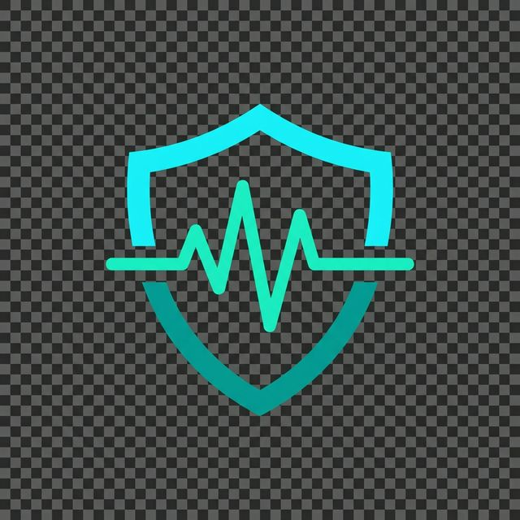

| Tim: | LIFE LINK - NARUKVICA ZA POMOĆ NAJUGROŽENIJIM PACIJENTIMA |
| Članovi: | Kristina Gocev Teodora Pejčić Luka Vučić Mihailo Pešić Sava Petrović |
| Razred: | IV-1 |
| Škola: | Tehnička škola Pirot |
| Nastavnik-mentor: | Boban Blagojević, dipl. ing. elektrotehnike |
| Biznis mentor: | Sanja Rančić, dipl. ecc. |
| Školska godina: | 2025 / 2026 |
Pružiti starijim i najugroženijim pacijentima autonomnu sigurnosnu zaštitu ugrađenu u pametnu narukvicu koja ne zahteva pametni telefon za slanje hitnih poziva.
Postati standardno rešenje za zdravstvenu bezbednost upotrebom dostupnih embedded tehnologija – kombinacijom biometrije, IMU senzora i GSM komunikacije.
Proizvod: LifeLink je pametna narukvica bazirana na ESP32-S3 mikrokontroleru sa AMOLED ekranom 466×466px koji autonomno prati vitalne parametre, detektuje padove 3-faznim algoritmom i šalje SMS sa GPS lokacijom putem ugrađenog SIM800L GSM modula – bez potrebe za pametnim telefonom.
Finansijski rezime: Prototipska investicija iznosi ~8.500 RSD u hardverskim komponentama. Projektovana prodajna cena kompleta iznosi 15.000 RSD. Bruto marža po jedinici: ~43%.
Svrha kompanije: LifeLink postoji da reši realan i rastući problem – starija lica u Srbiji (>20% populacije) su posebno ugrožena padom, koji je vodeći uzrok telesnih povreda ove populacije. Dostupna rešenja (Life Alert, Apple Watch) su skupocena i zahtevaju smartphone. LifeLink nudi cenovnopristupačno, autonomno rešenje.
Nastanak i razvoj ideje: Ideja je nastala zapažanjem da su postojeće pametne narukvice i satovi previše skupi i vezani za ekosistem pametnog telefona. Tim je postavio pitanje – „Može li se ovakva zaštita ugraditi u pristupačan, autonoman uređaj?" Odgovor je potražen u embedded sistemima otvorene arhitekture.
Celokupna strategija i ciljevi: Fokus na segmentu starijih i osetljivih korisnika. Kratkoročno: finalizacija prototipa i lokalna prodaja. Dugoročno: sertifikacija medicinskog IoT uređaja i skaliranje.
LifeLink pametna narukvica integriše tri funkcionalna sistema u jednom nošenom uređaju malog faktora forme:
| Sistem | Tehnologija | Prednost u odnosu na konkurenciju |
|---|---|---|
| Detekcija pada (3-fazna) | QMI8658 IMU + SVM algoritam | Eliminacija lažnih alarma (θ > 60° orijentacija + 5s mirovanje) |
| Zdravstveni monitoring | MAX30102 optički senzor + FFT | Hardware-akcelerovana FFT analiza u realnom vremenu (100 Hz) |
| GSM SOS (autonomno) | SIM800L + UART AT komande | Radi BEZ pametnog telefona, SMS sa Google Maps GPS linkom |
Cena komponenti: ~8.500 RSD. Prodajna cena kompleta: 15.000 RSD. Metod: troškovni + analiza sličnih IoT nosivnih uređaja na tržištu.
LifeLink je jedino rešenje na lokalnom tržištu koje kombinuje 3-faznu detekciju pada, merenje vitala i GSM SOS bez aplikacije – u prihvatljivoj cenovnoj kategoriji.
| Stavka | RSD |
|---|---|
| ESP32-S3 AMOLED narukvica (pločica) | 5.500 |
| SIM800L GSM modul | 800 |
| MAX30102 senzor | 400 |
| Kondenzatori, kablovi, alat | 600 |
| SIM kartica + aktivacija | 300 |
| Pakovanje i materijali | 400 |
| UKUPNO (1 kom.) | 8.000 |
Marža: ~6.500 RSD/kom (43%)
| Rešenje | Cena | Autonomija |
|---|---|---|
| Apple Watch | ~70.000 RSD | ❌ Treba iPhone |
| Life Alert (uvoz) | ~30.000 RSD | ✅ |
| LifeLink | 15.000 RSD | ✅ Bez telefona |
Specifičnost LifeLink-a na tržištu: autonomni GSM rad bez smartphone aplikacije, prihvatljiva cena i lokalna podrška. Dodatna vrednost – prateća Flutter mobilna aplikacija dostupna besplatno za one koji žele napredni BLE monitoring.
| Period | Cilj (kom.) |
|---|---|
| Q1 (oktobar–decembar) | 2 – testni korisnici |
| Q2 (januar–mart) | 5 – sajmovi/takmičenja |
| Q3 (april–jun) | 8 – direktna prodaja |
| Godišnji cilj | 15 jedinica |
Realizovano: [X kom.] | Prihodi: [X RSD]
Tim LifeLink ocenjuje poslovnu godinu kao tehnički izuzetno uspešnu, uz izazove u prodajnom segmentu tipične za prvu godinu prototipske kompanije.
Ključne donesene odluke i uticaj:| Stavka | RSD |
|---|---|
| Fiksni troškovi (alat, razvojna oprema) | 2.000 |
| Varijabilni troškovi/kom. (komponente) | 8.000 |
| Prodajna cena | 15.000 |
| Bruto marža/kom. | 7.000 (47%) |
| Neto marža/kom. | 5.000 (33%) |
Tačka pokrića: 1 jedinica pokriva sve fiksne troškove prototipa. Profit utiče na reinvesticiju u 3D štampanje kućišta i sledeću razvojnu iteraciju.
Strategija opstanka: sklapanje partnerstva sa gerontološkim centrima u Pirotu, plaćanje pretplate na SIM uslugu i tehničku podršku, te potencijalno licenciranje algoritma detekcije pada produkcijskim proizvođačima pametnih narukvica.
| Opis | RSD |
|---|---|
| Prihodi od prodaje ([X] kom.) | [X × 15.000] |
| Troškovi materijala | [X × 8.000] |
| Fiksni troškovi (alat, org.) | 2.000 |
| Administrativni troškovi | 500 |
| Neto rezultat | [Iznos RSD] |
| Aktiva | RSD |
|---|---|
| Gotovina i sredstva plaćanja | [Iznos] |
| Zalihe (komponente/poluproizvodi) | [Iznos] |
| Osnovna sredstva (alat, oprema) | 2.000 |
| Ukupna aktiva | [Ukupno] |
| Pasiva | RSD |
|---|---|
| Uloženi kapital članova | [Iznos] |
| Zadržana dobit | [Iznos] |
| Ukupna pasiva | [Ukupno] |
Učenička kompanija LifeLink nastala je kao rezultat iskrene znatiželje i volje učenika IV-1 razreda da reše konkretan, svakodnevni problem na tehničan i inovativan način. Kao mentor koji prati rad tima od samog početka, mogu sa ponosom reći da su učenici pokazali nivo tehničke zrelosti i istrajnosti koji daleko prevazilazi ono što se tipično očekuje na ovom uzrastu.
Tim je samostalno savladao složene tehnologije – od ESP-IDF embedded programiranja i FreeRTOS višenitnog rada, preko DSP algoritmike za analizu biometrijskog signala (FFT), do razvoja cross-platform mobilne Flutter aplikacije. Posebno me je impresioniralo to što su učenici svaki tehnički problem – kao što je bila nestabilnost GSM napajanja – rešili metodičnim pristupom: analizom uzroka, istraživanjem dokumentacije i eksperimentalnim verifikacijom rešenja.
Rad na projektu pomogao je učenicima da razviju ne samo tehničke veštine, već i timski duh, sposobnost prezentacije ideje i razumevanje poslovnih aspekata – od kalkulacije cene do tržišnog pozicioniranja. LifeLink je pravi primer kako škola može biti polazna tačka za inovaciju koja ima realnu primenu u zajednici.
LifeLink je funkcionalan prototip koji dokazuje da učenici mogu razviti komercijalno relevantno, tehnički sofisticirano i društveno korisno rešenje. Autonomni GSM SOS poziv bez pametnog telefona, 3-fazni algoritam detekcije pada koji eliminiše lažne alarme, i prihvatljiva cena u poređenju sa konkurencijom – čine LifeLink pravim kandidatom za dalji razvoj i tržišni plasman.